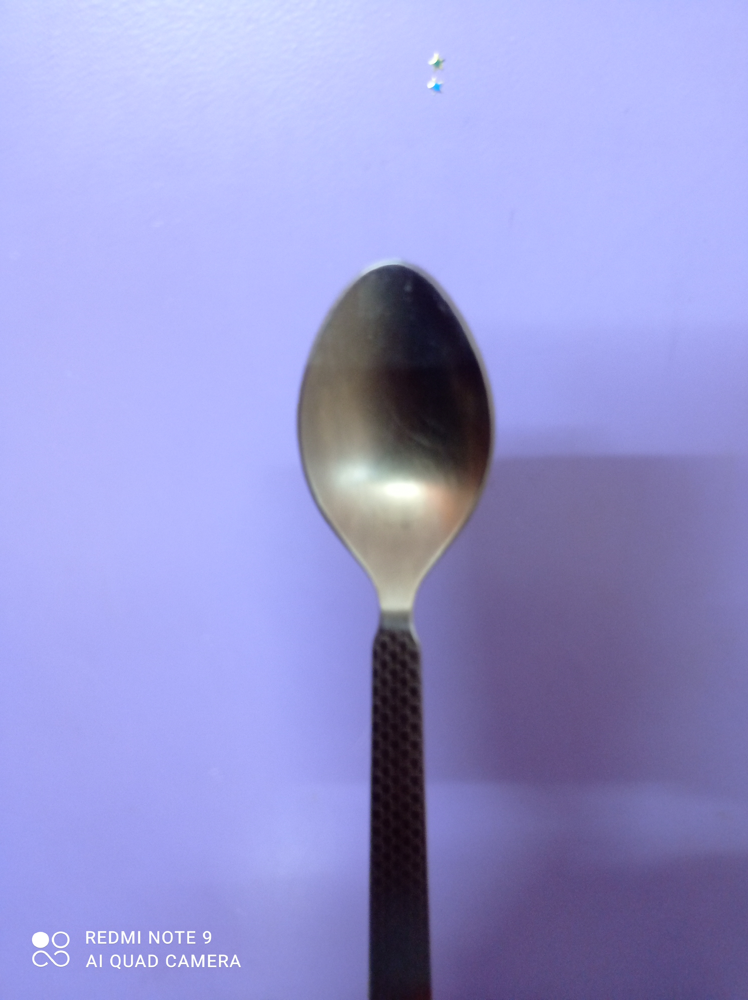
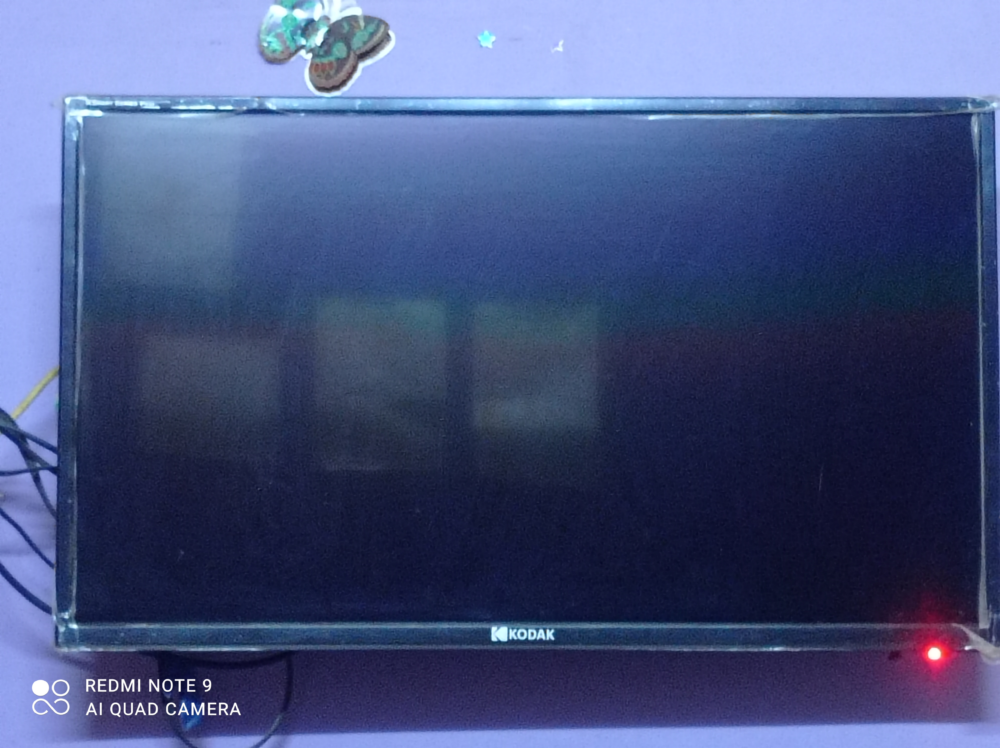
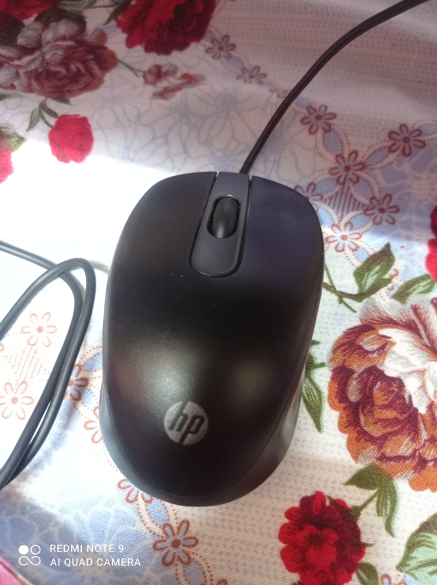
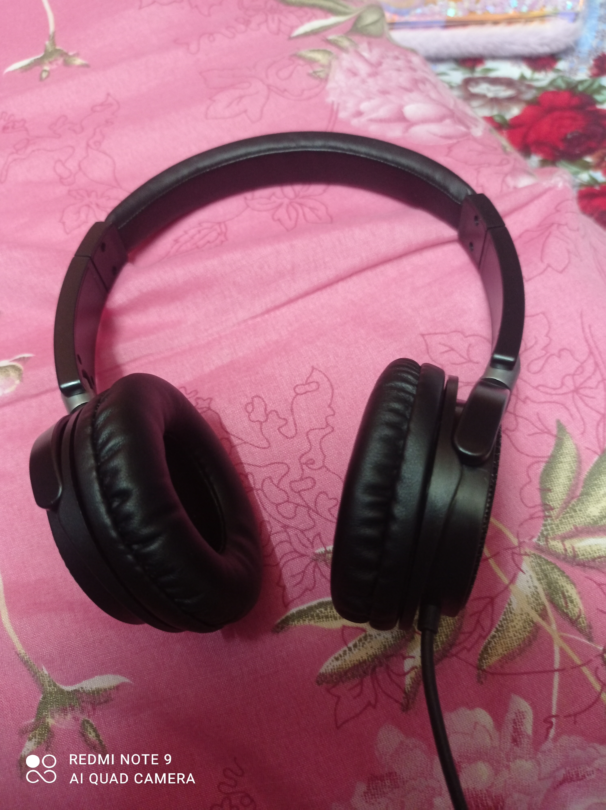
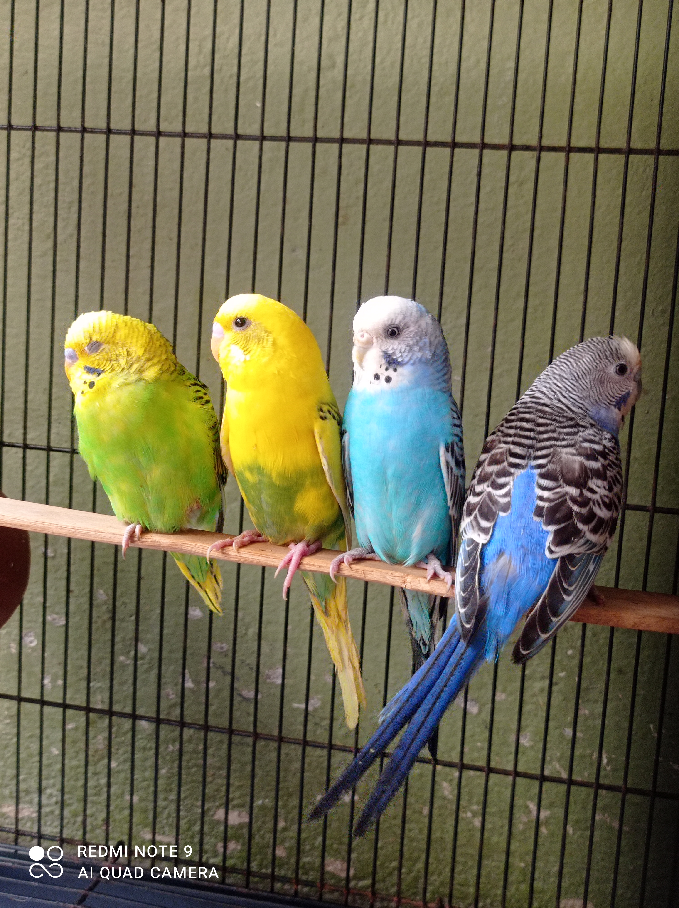

CASE STUDY BETWEEN GOOGLE LENS AND MOBILNET
GOOGLE LENS
vs
MOBILENET
- Test Image- Spoon 
- Test Image- TV 
- Test Image- Mouse 
-
Test Image- Fan

- Test Image- Headphones 
- Test Image- Rabbits/ Bunnies
- Test Image- Love Birds / Budgies 
-
Test Image- Rubik's Cube